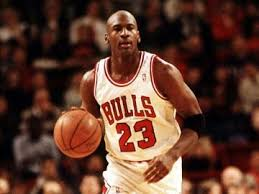
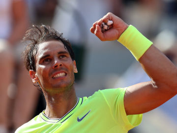

Atletismo

Natación

Futbol

Esta página esta dedicada a algunos de los deportistas más laureados de la historia.
| Deporte | Deportista | Logros | |
Atletismo |
Jesse Owens | 4 medallas de oro olímpicas | |
Natación |
Mark Spitz | 7 medallas de oro olímpicas | |
Futbol |
Johan Cruyff | 1 Copa de España, 4 Ligas de España, 3 Supercopas de España, 1 Recopa de Europa, 1 Copa de Europa y 1 Supercopa de Europa | |
Baloncesto |
Michael Jordan | 6 anillos de campeón de la NBA |  |
Tenis |
Rafael Nadal | 18 Grand Slam, 34 Titulos de master 1000, 20 ATP 500, 4 copa Davis y 1 medalla de oro en los juegos olímpicos |  |